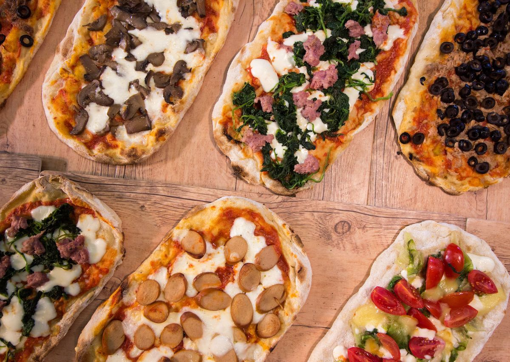
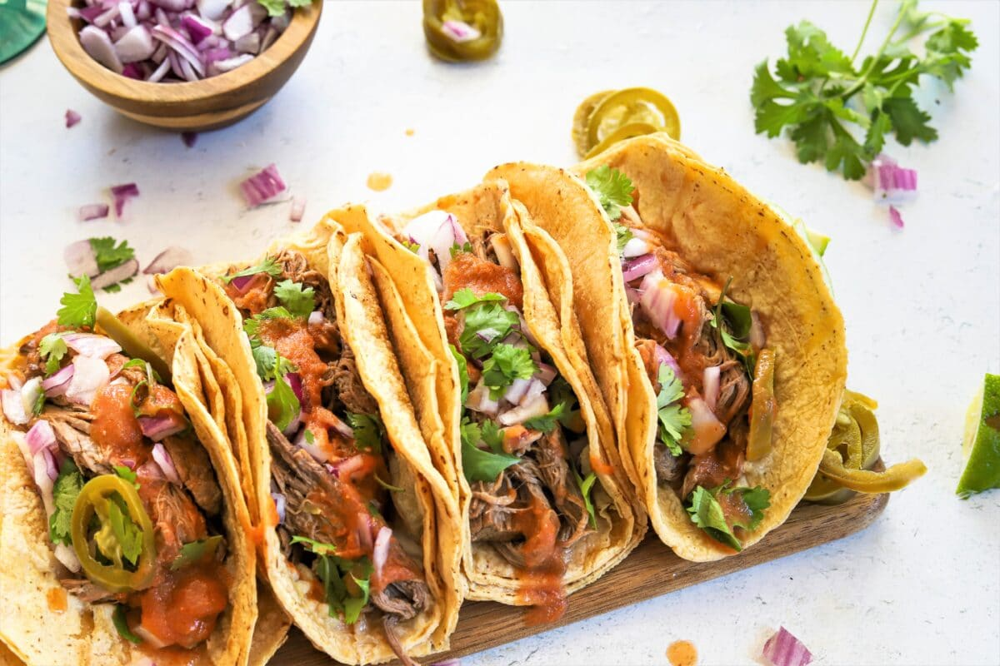
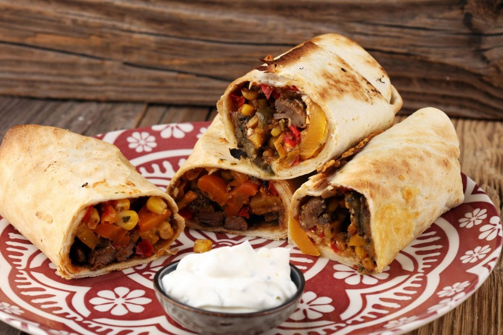
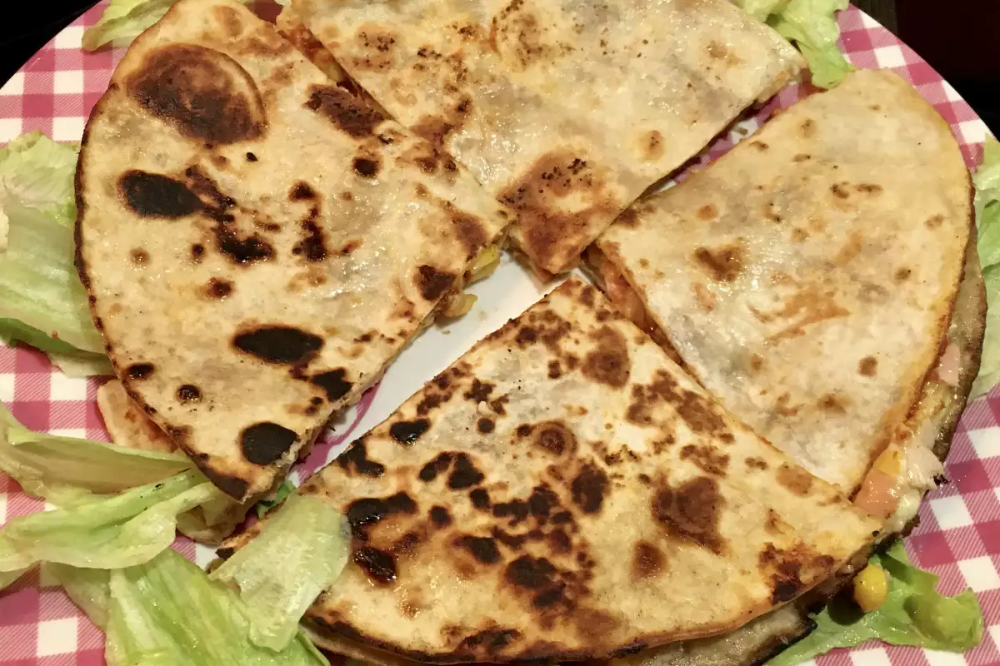
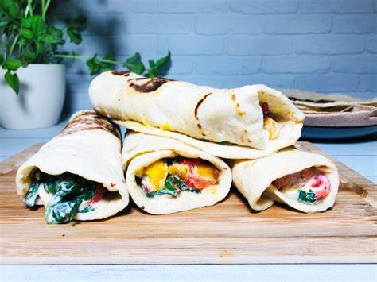
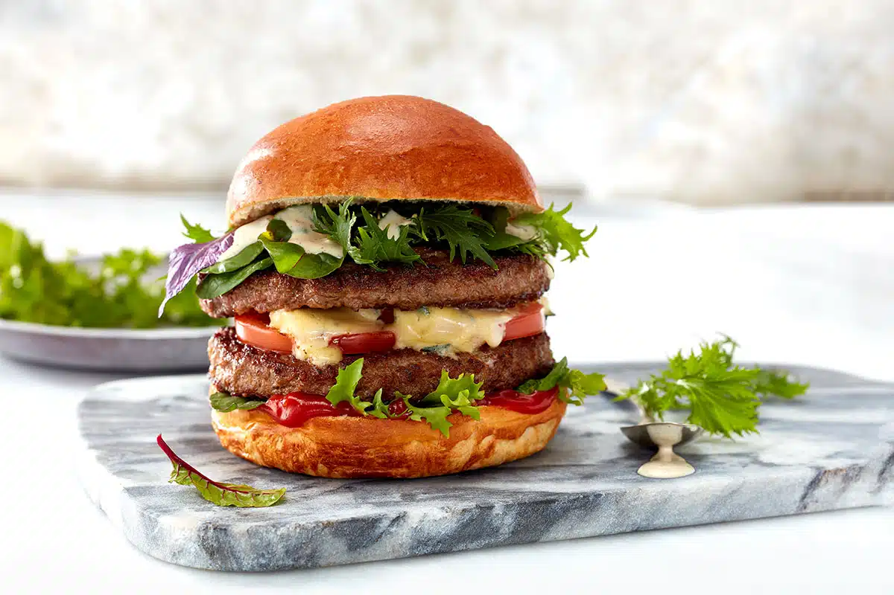

Alternatywy dla kebabów
Pizza
Jest ona obecnie szeroko rozpowszechniona na całym świecie, gdzie powstały jej nowe warianty. Jest to płaski placek z ciasta drożdżowego
(focaccia), z sosem pomidorowym, posypany tartym serem (najczęściej jest to mozzarella) i ziołami, pieczony w bardzo mocno nagrzanym piecu.
Pizzę podaje się na gorąco, lecz rozpowszechnione jest jedzenie jej również na zimno. Tradycyjnym miejscem spożywania pizzy są pizzerie,
lokale gastronomiczne specjalizujące się w przyrządzaniu i serwowaniu pizzy.

Tacos
Składa się ono przeważnie z tortilli wykonanej z mąki kukurydzianej lub pszennej, zazwyczaj o niewielkiej wielkości o średnicy kilkunastu centymetrów,
oraz – tradycyjnie i najczęściej – siekanego mięsa (wieprzowego, wołowego, drobiowego, także z podrobów), jednak popularne są także tacos z rybami,
owocami morza, można spotkać też wersje wegetariańskie i wegańskie.

Burrito
Burrito lub taco de harina – potrawa pochodząca z Meksyku i kuchni Tex-Mex. Składa się z pszennej tortilli
(w odróżnieniu od tortilli do tacos robionych z mąki kukurydzianej), która jest zawinięta wokół farszu. Tortilla zwykle jest lekko
zgrillowana lub podgrzana na parze w celu jej zmiękczenia i uelastycznienia. W Meksyku jedynym wypełnieniem jest zazwyczaj fasola,
meksykański ryż lub mięso i tortilla jest mniejsza. W Stanach Zjednoczonych nadzienie zawiera bogatszą kombinację składników,
takich jak meksykański ryż, fasola, sałata, salsa, mięso, guacamole, ser i śmietana, a rozmiary tortilli są różne, niektóre burritos
są znacznie większe niż ich odpowiedniki meksykańskie.

Tortilla
Tortilla jest to rodzaj płaskiego, okrągłego placka o średnicy od 6 do 30 cm, tradycyjnie z masy lub mąki kukurydzianej, obecnie także z mąki pszennej,
stosowanego jako pieczywo i baza do innych potraw. Meksykańskie i południowoamerykańskie tortille powstają po zagnieceniu masy kukurydzianej mąki z wodą,
uformowaniu cienkich placków i pieczeniu ich na specjalnych patelniach (tradycyjnie był to comal). Obecnie większość dostępnych w handlu tortilli jest
wytwarzanych maszynowo. Powinno się je spożywać ciepłe, gdyż po ostygnięciu nabierają konsystencji gumy.

Wrapy
Wrap (z ang. „zawinąć”) – rodzaj kanapki wykonanej z okrągłego płaskiego chlebka (np. meksykańska tortilla, arabska pita lub ormiański lawasz) z
zawiniętym w środku nadzieniem. Wrap różni się od kanapki tym, że całkowicie spowija nadzienie. Natomiast kanapka składa się z wyraźnie widocznych dwóch warstw
– górnej i dolnej. We wrapie nadzienie z reguły składa się z pokrojonego w plastry mięsa, drobiu lub ryby na zimno wraz z rozdrobnioną sałatą,
pomidorami pokrojonymi w kostkę, smażonymi pieczarkami, boczkiem, cebulą, serem i sosem

Burgery
Hamburger – typowe danie typu fast food, kanapka (sandwich) z kotletem z mięsa wołowego (patty). Porcja mięsa mielonego uformowana jest w płaski,
okrągły placek, następnie usmażona lub upieczona bez panierki na ruszcie (grillu). Gotowy kotlet bywa zwykle umieszczany między dwoma kawałkami lekko przypieczonej,
poprzecznie przeciętej bułki (co pozwala go jeść trzymając w dłoni, bez pomocy sztućców), oraz ugarnirowany dodatkami takimi jak sałata, pomidor, ketchup, majonez,
ogórek konserwowy.
